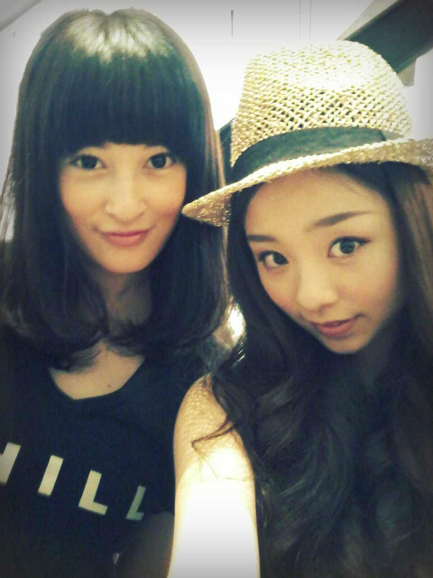

| 2012/07 21 Sat | 川村真洋 私髪切ってもすぐ伸びちゃうんで す・ω・`ろってぃー♪ |
へいへいへいへーーーい☆!!
皆様お待たせしました。
ろてぃーーー))))でえす♪
パポッ、、、
最近 私服載せてなかったから^ω^...
って言っても
全身うつってないとゆう...。
これは
大好きなオーバーオールです♪*゜+
中はグレーのインナーに
何か ピラピラ〜♪っとしたものを
はおっております。
『ピラピラとしたもの』
適当とか言わないで =ε=
ぶー。
すそはロールアップして
足首出して
茶色のサンダル履いてました。☆
キランッ☆))
この帽子
かぶってくる時
いつもまりか♪は
かってに盗んでかぶって
満足そうにしてる...。笑
こっちじーっ...,て見て
なんか言って欲しそうにしてる。
なんや...。?(笑)
欲しいの?
かまってほしいの?
それとも
似合ってると言ってほしいのか?´∀`
本間 たっくんやわっ*^ω^*
そいでそいでねっ!
聞いてっ〃ω〃♪
今日 せっちゃんと表参道にある
美容院に行ってきて
髪の毛カットしに行ったの♪
やっぱ美容院行くとなんか
楽しい気分になっちゃいます*・ω・*
6センチ位切ってもらいました♪
にやぁ〜ω
せっちゃんはねぇ〜
イメチェンしてはったわぁ〜
〃ε〃
超かわいいよ*・ε・*

ねっ?
今日いっぱい写真とったから、
いっぱい載せたい...♪
けど、一気に貼れないから
またちょこちょい貼るねっ*・∪・*?
美容院行った後は
そっこう 歌っ!! だだだだんすっ!!!
の練習★☆★!!!
電車でポポポーンっ!って
移動して皆でレッスンにリハ。
今日はすごく大変だったけど、
大変になればなるほど
テンションがあがっちゃう
ろてぃーですっ!笑
よろしくどーぞです *・ω・*
夏休みは大変だべー★☆
あっ、ちなみに
昨日もレッスンにリハに
あったんだけど
帰りはそのまま
せっちゃん家にただいま。
泊また〜〜〜(> <)
うわあ〜〜い(ω)
せっちゃん♪の
ままさんぱぱさんは
美男美女でした。
この目でちゃんと見たっ!
美男っ!美女www 。
ほな 最高のライブをしたいから
そのために頑張るしか・¢・!
今さらだけど...
皆様のこと大好きです*・ω・*
おやすみなさい〃ω〃のし